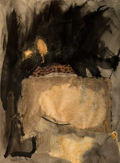
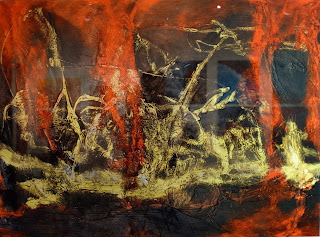
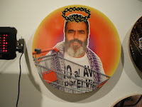
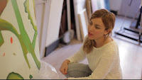
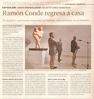

INAUGURACIÓN del MUSEO DE ARTE CONTEMPORÁNEO "Antonio Gualda"
en DURANGO, México.
Los artistas Enriqueta Hueso y Juan Carlos Julián tienen obra permanente en este Museo de Arte Contemporáneo
|
(M)arte sin complejos(El Periodico Mediterraneo.com)
|
Sergio Belinchón expone en GE Galería, Mexico Del 27 de marzo al 25 de abril de 2014 El día 27 de marzo será presentado por primera vez en México uno de los jóvenes fotógrafos más importantes del panorama artístico español. Ha colaborado con el Museo Reina Sofía y es parte de reconocidas colecciones a nivel mundial. Actualmente ¡ADIÓS AMIGO! está en exposición en Tokio, Madrid y México VER NOTICIA |
El vídeo "ADIOS AMIGO" de Sergio Belinchón gana la 3ª edición del Premio Internacional de Artes Plásticas de Caja Extremadura |
Sergio Belinchón expone en el Museo Contemporáneo de Tokyo Del 15 de febrero al 11 de mayo de 2014 The Marvelous Real Contemporary Spanish and Latin American Art from The MUSAC Collection VER NOTICIA |
LOS BRAGALES ATERRIZAN EN LA ISLA Del 28 de febrero al 26 de abril de 2014 el Centro de Arte La Regenta nos muestra 23 fotografías y dos vídeos de artistas nacionales e internacionales como SERGIO BELINCHÓN, entre otros. VER NOTICIA |
SERGIO BELINCHÓN
Calendario de exposiciones 2013 - 2014
THE REAL MARVELLOUS
Group exhibition at MOT, Tokyo, Japan
From February 14th 2014 to May 11th 2014
THE END IS THE BEGGINNING
Group show at The Wand, Berlin
From November 29th 2013 to January 8th 2014
Fotografía contemporánea en la Colección Telefónica
Group show at Telefonica,Madrid.
From October 23rd 2013 to April 20th 2014
THE REAL MARVELLOUS
Group show at MUSAC, Spain.
Sep 14th 2013 - Jan 8th 2014
|
Antón Pulido en el Museo de Pontevedra
|
Exposición de Antón Pulido en el Museo de Pontevedra
Del 21 de noviembre de 2013 al 12 de enero de 2014
|

Televisión de Santiago de Compostela |
5º FESTIVAL INTERNACIONAL DE VIDEOARTE
CAMAGÜEY 2013( Cuba)
Participación de la Galería O+O en el 5º Festival internacional de Videoarte con los artistas:
Jonathan Bellés: videos Pedro Sánchez,PS3*: videos Consuelo Cardenal: videoart Enriqueta Hueso y Pilar Palomares. videoart |
Reconocimiento de ”Ciudadano de Honor” de Chefchaouen a Jesús Botaro
 |
MASTER EN MEDIOS DE IMPRESIÓN GRÁFICA, ILUSTRACIÓN Y ACUÑACIÓN ARTÍSTICA. UCLM/FNMT - RCM.
IV Edición. BECAS Fábrica Nacional de Moneda y Timbre
- Real Casa de la Moneda Preinscripción: del 17 de junio al 30 de agosto , 2013
La Fábrica Nacional de Moneda y Timbre - RCM en colaboración con la Universidad de Castilla La Mancha, imparte en sus instalaciones de Madrid, un Máster en Medios de Impresión Gráfica, Ilustración y Acuñación Artística dirigido a Licenciados y Graduados en Bellas Artes con una duración de dos años lectivos.
Un profesorado especializado, un seguimiento pormenorizado de cada alumno, una dotación de medios, equipos materiales e instalaciones idóneas facilitan al alumno su formación permanente, y nos permite formar profesionales cualificados en los campos de la Obra Gráfica y del Diseño. El plazo de preinscripción se abrirá el próximo mes de junio y se seleccionarán un máximo de 8 alumnos para cada una de sus especialidades (Grabado y Diseño Gráfico)
Más información en www.uclm.es y en www.fnmt.es |
18 de mayo Día Internacional de los Museos
Exposición de Mujeres Artistas en el Reina
YO TAMBIÉN EXPONGO EN EL REINA

 Enriqueta Hueso "Nina Hagen"Valencia Tinta china y collages s/papel 100 x 74 cm |
 ENRIQUETA HUESO
ENTRA A FORMAR PARTE DE
LA PLANTILLA DE ARTISTAS DE
SALOMON ARTS GALLERY
DE NEW YORK
|
PILAR PALOMARES
ENTRA A FORMAR PARTE DE
LA PLANTILLA DE ARTISTAS DE
SALOMON ARTS GALLERY
DE NEW YORK
|
Entrevista con el pintor surrealista
Daniel Ramos Ruíz
La revista cultural de Miami "Sub-urbano" ha publicado una entrevista con el pintor |


{kind=link}
{kind=link}
{kind=link}
{kind=link}
{kind=link}
{kind=link}
{kind=link}
{kind=link}
{kind=link}
{kind=link}
{kind=link}
{kind=link}
{kind=link}
 Se clausuró en un ambiente de general satisfacción por convertir una feria de grabado y estampación en algo más acorde con el siglo XXI: Un evento sobre arte múltiple en sus variadas facetas que incluyen grabado, estampación, fotografía, arte digital, instalaciones, escultura, videoarte, música, libros, cómic, diseño, etc. Todo ello amparado por la nueva ubicación en 6 naves de MATADERO MADRID. La Asociación Madrileña de Críticos de Arte ha otorgado el premio AMCA ESTAMPA 2012 a la mejor Galería de la feria a la GALERÍA O+O, de Valencia, España, cuya directora es Enriqueta Hueso. Publicado el 12. nov, 2012 en mundoferial.com |
LA IGNOMINIA HA PINCHADO EN HUESO
Articulo de Diego Vadillo López, Revista Madrid en Marco
Enriqueta Hueso y Pilar Palomares prepararon
un baño de burbujas al estado de las cosas
Asistía a la muestra de Estampa 2012, celebrada en Madrid,...
....avanzaba
pausadamente cuando, de repente, una sutil obra con tintes sociales y
reivindicativos llamó mi atención sobremanera: una en uno de cuyos
elementos de composición aparecía el célebre sindicalista Juan Manuel
Sánchez Gordillo con una corona de espinas y tras un carrito de la
compra, similar a aquel que se agenció el muy truhán para materializar
el golpe de efecto en una superficie comercial. Sin duda todos los
elementos compositivos de tal obra llamaban de la manera más ostensible
la atención de la mayoría del público, quizá por ser una pieza que no ha
querido dar la espalda al terrible viento que nos mece, sin por ello
renunciar a la finalidad estética, que, por cierto, queda muy bien
armonizada con el trasfondo.


Con
el montaje de “Spanish revolution-La guerra silenciosa” queda patente
que el arte siempre ha estado cercano a lo social, junto con su función
principal de lanzamiento de artistas. De hecho, el ejemplo de ello es
que en Estampa el “stand” de ORIENTE Y OCCIDENTE (O+O) ha tenido una
gran asistencia habiendo sido además reconocido por la propia dirección
de la feria, junto con el aplauso del público y de la crítica. Y es que
observando la obra de artistas como Inés Ranseyer, Pilar Palomares o
Sergio Belinchón, no cabe la menor duda de que la galería de Enriqueta
Hueso sigue en la línea de calidad a que tiene acostumbrado al sector,
demostrando año tras año su buen hacer y profesionalidad, manteniendo,
además, como ha quedado demostrado en la recién concluida edición,
criterios que son muy favorables a la colaboración social.
Logró,
en definitiva, la galería O+O este año en Estampa, a través del
inspirado e inspirador panel, una forma de testimoniar de la manera más
sublime la palmaria realidad que nos asola. Y, además, como no podía ser
de otra forma, dicha galería, que, como se ve, tiene un par de Oes, a
cargo de Enriqueta Hueso (coautora con Pilar Palomares de “Spanish
revolution-La guerra silenciosa”), ha recibido el premio de la
Asociación Madrileña de Críticos de Arte (AMCA) a la mejor galería de la
Feria Estampa Arte Múltiple 2012, ante lo que ya solo nos queda dar la
enhorabuena a las dos artífices del proyecto por ser elegantemente
plásticas sin perder, eso sí, ni un ápice de irreverencia.
Gracias por este baño de burbujas antiespeculativas.
|
{kind=link}
SEGUNDA BIENAL KOSICE
 Exhibición de las obras ganadoras de la Segunda Bienal Kosice que se lleva a cabo en el Planetario de la Ciudad de Buenos Aires, en la que participa JOAQUIN FARGAS con la obra: Hydrosmos GK1 . Mención a la Trayectoria y la Investigación- Joaquin Fargas | Hydrosmos GK1 -| Escultura cinética  MAS INFORMACIÓN |
Exposiciones en su ciudad
Valencia del 21/09/2012 al 13/10/2012
La Galería O+O de Valencia comienza la temporada con la exposición individual de PS3*Pedro Sanchez III. Artista multidisciplinar nacido en Madrid y afincado en Nueva York, desde hace muchos años, vivió también unos años en Japón, y que ha expuesto su obra en ciudades como Tokio, Nueva York, Madrid, Berlín, Paris, Basel y Londres. Estética de los espacios excluidos, el reverso de la utopía, donde su función representativa está desnuda de su propios "atributos", en cierta medida, ante la imposibilidad de representación como valor comercial y, al mismo tiempo, buscando un espacio, una experiencia donde no quedar contenido en los márgenes de una condición cultural, donde las ideolo............leer más.... |
{kind=link}
Entrevista a Lorena García
 |
{kind=link}
Exposición "Una mirada sobre las actitudes humanas" de Ramón Conde
 


Noticia en "farodevigo.es" Noticia en "correogallego.es" |
{kind=link}
{kind=link}
Las obras de los artistas Juan Carlos Julián y Enriqueta Hueso pasan de manera permanente al Museo de Arte Internacional Antonio Gualda de SÃO GONÇALO DO RIO ABAIXO ( Brasil ) y en el Museo Palacio de Los Gúrzua - Antonio Gualda de Durango (México)
El Museo de Bellas Artes San Pío V muestra “Expressions del ...
el periodic
... Antonio Alcaraz, José Manuel Almerich, Pepa Balaguer y Lluis Vicén, Raúl Belinchón, Sergio Belinchón, Joaquín Bérchez, Pepe Calvo, Enrique Carrazoni, ...

Consuelo Cardenal
Premio Fotografía 2010 Infanta Cristina
Premio Fotografía 2010 Infanta Cristina
{kind=link}

{kind=link}

Estampa 2010